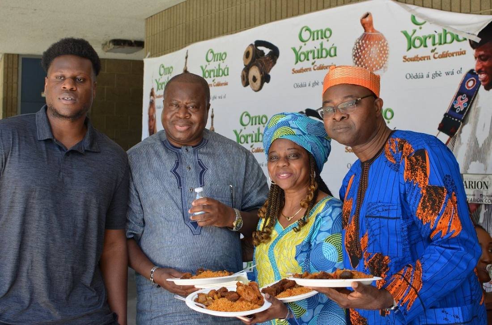
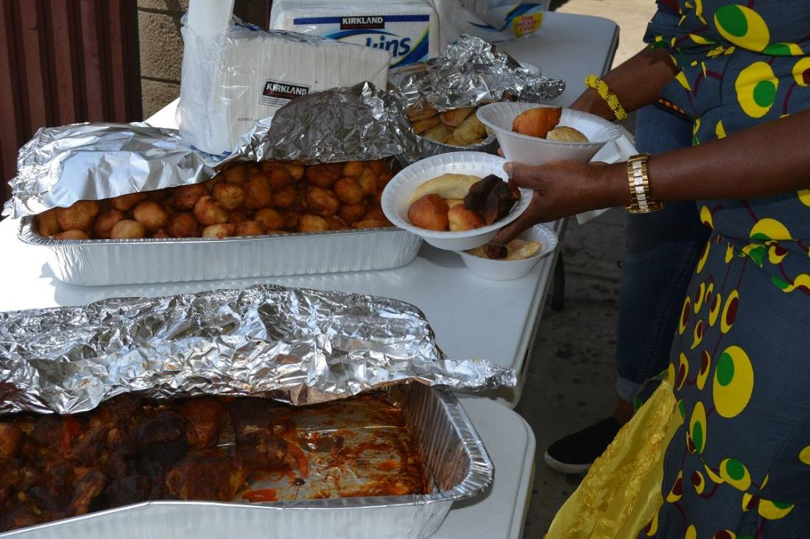
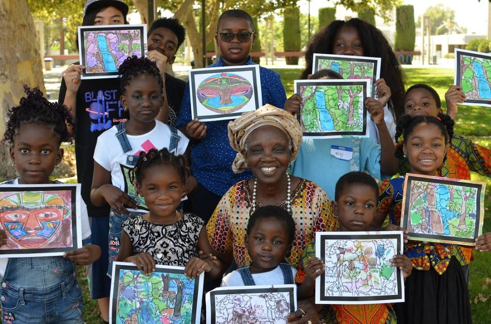

Component canvas
Every part the site is built from, in one place. Structure and tokens come from the design system. The nav, hero, and footer live here as the reference copy, and the interaction layer, hover, press, sticky, and the woven rule, lives in oy-components.css: change either here and it carries into the pages.
Logo
The Ifẹ̀ bronze head is the mark, background removed. In the nav: mark at 40px, then the full name in Source Serif, indigo, on two lines. "of Southern California" drops away under 1060px so it never collides with the menu. Footer: the light lockup at 58px. Never on a busy photo without a panel behind it.
Mark on light
images/logo-mark.png
images/logo-mark.png
Light lockup on dark
images/logo-lockup-light.png
images/logo-lockup-light.png
Site chrome
Nav, hero, and footer live here, in the component canvas. This is the reference copy: change it here first, then carry it into the pages. Shared styling and behaviour sit in oy-components.css, so hover, sticky, and pattern rules only need changing once.
Buttons
Full-round, 44px minimum target. Hover darkens or fills, press settles 1.5%. No lift.
Tables & sponsorships
Vendors & sponsors
On dark: outline fills white on hover, focus ring turns gold.
Card texture, pick one
Four takes on the same card, same content. A is the current one. B adds paper grain so the ground reads as real paper. C is grain with a stronger àdìrẹ dot field. D is grain with a soft indigo wash pooling in one corner, like dye at the edge of cloth. C is the pick (2 Sep 2026) and is now set on every page via data-card="grain-dots", cards only, sections untouched.
B. Paper grain
C. Grain + àdìrẹ dots • Chosen
D. Grain + indigo wash
Cards
Polish pass 2. Paper ground, indigo hairline, a 6px aṣọ òkè edge on top (the same weave as the dialog header), and a faint àdìrẹ dot field in the ground. Corners are 6px, image containers square. Hover: border deepens, title warms, arrow slides, rule draws. Nothing lifts, nothing zooms.

Program card
Photo, title, two lines, one quiet action. Used for programs and get-involved doors.
Enroll a learner
August 2026
News card
Date, headline, one line. No image needed. Three across in News & events.
Read moreQuote card, two or three sentences from a member.
[ Photo placeholder, names the future photo ]
Door card
One clear way in. Photo or placeholder, a title, two lines, one real button.
Partner with usPhoto tiles
Caption over a scrim, Yoruba first. Square corners, no zoom on hover. Placeholders carry the dot field until photos land.
[ Àdìrẹ placeholder ]
[ Terracotta placeholder ]
Event band
The festival frame: chevron rows and stripe seams top and bottom, motif columns on the edges. One band at a time, whichever event is next.
Stats, kickers, dividers
Form and socials
Colour and pattern
indigo-900
indigo-700
gold-500, actions only
terra-600, kickers
green-600, YCC only
paper
Àdìrẹ dot field on dark
Batik wash on paper
Motif banner strip
Built for the eleven inner pages
Everything below is used on more than one page, so it is built once, here, and the pages only supply layout and copy. Add a variant here before using it on a page. Styling lives in oy-components.css.
Page header
Slim on nine pages, photo band on the two event pages. Kicker, H1, one line, up to two buttons. Used on: all eleven.
At a glance strip
The hard facts a visitor needs before scrolling. Five columns, four when there is no fifth fact. Used on: Odunde, Gala, Language School, Collective, Impact, Donate.
DateJune 2027Day pending
TimePending
WhereLeimert Park Plaza
CostPending
FamilyAll ages
StatusPending
ServesPending
SincePending
NextPending
Take-part band
The closing ask on nine pages. Same rows, reordered per page. Chips of different widths pushed the text out of line, so the band now has three label treatments. Pick one per site, not per page. Used on: both event pages, all three program pages, Get Involved, Impact, People & History, Donate.
A. No labels
B. Fixed-width label column
C. Kicker labels
Person card
With a portrait, without one, and compact. The no-portrait variant is a real design, not a broken one: a woven tick replaces the face. Used on: People & History, Language School.
[ Portrait ]
Role pending
Name pending
Two lines on what they carry for this organization, in their own words where possible.
Role pending
Name pending
Without a portrait the card tightens, name and role forward, so a grid of them still reads as intentional.
VolunteerName pending
TeacherName pending
Compact, for staff and long-serving volunteers.
Schedule row
Time-led for the festival and the Gala, day-led for a Saturday at the school. Used on: Odunde, Gala, Language School.
00:00
Opening procession
Ẹgbẹ́ Ìbílẹ̀Pending. Drummers lead the walk in.
00:00
Market opens
Ọjà BalógunPending.
Arrival
Doors and greeting
Pending.
First hour
Class by level
Pending.
Zone card
Yoruba name, English translation, one line, one photo. The card that carries the festival's Yoruba surface. Five across, three-up grid, or list. Used on: Odunde.

The marketỌjà Balógun
Vendors, food, and cloth. Where the day starts and the money moves.

The children's compoundÀgbàlá Ọmọde
Ayo boards, art, and games. Where the children are kept and known.
[ Zone photo ]
Name pendingZone four
Pending: name and line
List row
One row shape, four uses: an upcoming event, a recurring item, a sponsor tier, a news entry. Used on: News & Events, Gala, Get Involved, Impact.
Jun2027
Ọdúndé Festival
A free day of Yoruba culture, four zones, all ages.
Leimert Park Plaza
EverySat
Yoruba Language Lessons
Weekly classes for children and adults. Recurring items appear once with a cadence.
Tier name pendingPending: amount
- Seats at the table
- Program recognition
- Stage mention
- Logo placement
Filter chip row
A view, not a decision: filtering happens in place, writes itself into the address, and never reloads. Dropped from the gallery, where all albums now sit in one mosaic. Used on: News.
9 posts, all years
No posts match that combination yet. Show everything.
FAQ accordion
Single open by default, multiple open where people compare answers. Closed rows keep their 44px target. Used on: Language School, and any page that grows a questions block.
Pending: the answer
Ticket tier card
Two variants: buy now, which leaves for Eventbrite in a new tab, and enquiry, which we invoice by hand. Our card, their checkout. Used on: Gala.
Table of ten
Price pending
Placed by hand and invoiced. Nothing is charged on this page.
- Ten seats together
- Named on the table card
Amount selector
Retired. Zeffy's embed owns the amount step (their API is read-only, so the checkout cannot be rebuilt in our UI). Kept here as the visual reference for how the embed should sit inside our card. Used on: Donate, as the embed frame.
Enquiry modal shell
One shell, eight field sets: sponsor, performer, Gala table, membership, volunteer, enrollment, vendor application, and general contact. Every form on the site except the newsletter is this dialog. Escape closes, focus is trapped while open, focus returns to the button that opened it, and failure never closes it. Shown here out of its overlay. Used on: all eleven pages.
Sponsor Omo Yorùbá
Four questions, then we send the deck and the impact numbers.
We still need an organization, an email address. Nothing you typed has been cleared.
Ask about performing
Same shell, different field list.
Ẹ ṣé! ✓ We have your details.
The festival program is decided in the spring. You will hear from us either way.
Pending from youThe named contact who follows this up, and how long they take to reply.
Multi-step inline form
Retired. Every form now opens as a dialog from a card that explains what it asks of you first, and the newsletter in the footer is the only place a visitor types directly into the page. The field, error, upload, and success states below still govern what the dialog looks like inside. Used by: the enquiry dialog.
✓Business and contact
2What you sell
3Fees and terms
Tell us which booth size you need. We keep everything else you have typed.
Photographs of your setup
Drop files here, or choose from your device. Up to 5 MB each.
Ẹ ṣé! ✓ Your application is in.
Success opens in Yoruba, then says plainly what happens next. Every form on the site ends this way.
Outcome and legitimacy blocks
An outcome card carries a figure where one exists and says plainly where it does not. The source line under each number is what separates this from marketing. Used on: Impact, Donate.
Yoruba Language Lessons
PendingLearners enrolled, terms completed, and how many return the following term.
Source: pending. Name the year it covers and how it was counted.
Ọdúndé Festival
5Festival zones at Leimert Park Plaza, each with its own program.
Source: Omo Yorùbá program, 2026. Counted from the site plan.
Financial documents
Not yet publishedNaming a gap and dating the fix reads as competence. A missing heading reads as concealment.
Pending: when the first annual report and 990 will be posted.
Album tile and lightbox
Albums get pages, photographs get an overlay. Captions can be always on or on hover. The overlay puts itself in the address bar so one photograph can be shared. Used on: Photo Gallery.
Year strip
The program cadence across one year. The block a new family screenshots. Used on: Programs.
Every SaturdayYoruba Language LessonsTerm dates pending
JuneOdunde FestivalLeimert Park Plaza
Nov or DecEnd-of-Year GalaDate pending
Cadence pendingKids & STEMPending
Cadence pendingCultural CollectivePending
Pending placeholders
The eleven pages now carry stand-in content instead of these chips, so they read as finished. Every invented value is listed in the mock content register. The chips stay in the library for the next block that has nothing real behind it yet.
Pending: 2027 date
Pending: fee and deadline
Pending from youThe founding story, in your words. Who started it, what was missing in Southern California, and what the first year looked like. Around 180 words.
Pending: venue
Pending from youOn dark bands the same two forms flip to gold, so a pending item is never invisible against the header photo.